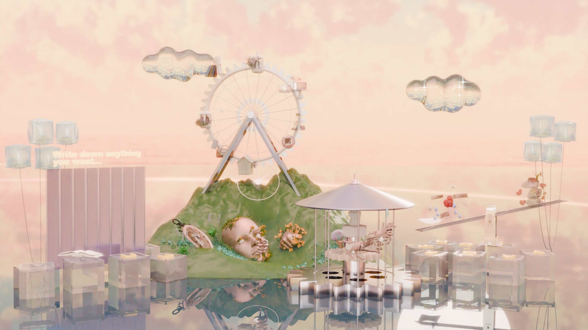
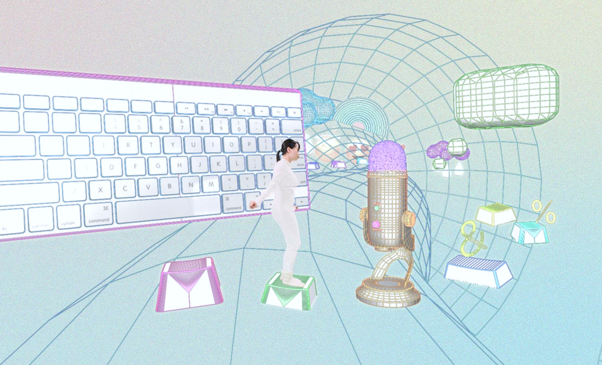
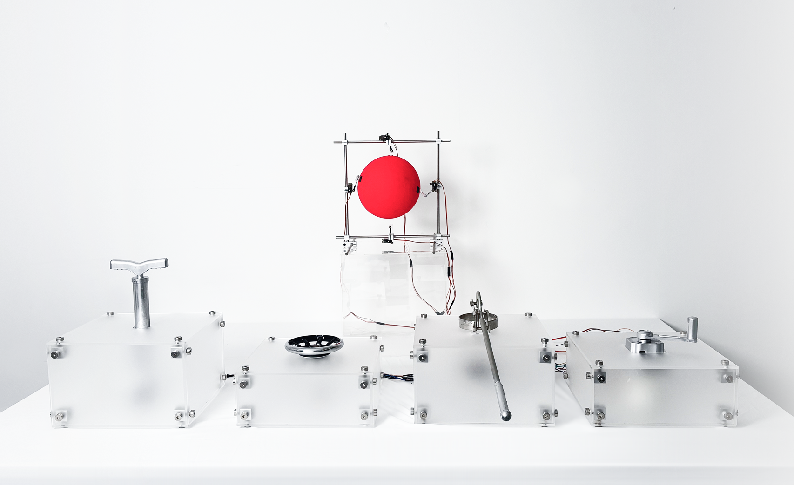

01
Maternal Intelligence
Film · Installation

02
Two perspectives: From a bird to chaos
Film · Installation

03
The Lotus' Narrative
Video Game

04
100￥ Challenge
VR · Installation

05
Caution! The Klein Loop
Film · Performance

06
Wandering Shanghai
Video Game

07
IPEV
Film · Installation

08
Friend＄hip
Browser Extension

09
Violencourage
Interative Installation